Adding Components
This lesson covers component-based design, including how
to create a sprite, rigid bodies, collision,
physics effects, and an overview of the LevelSettings
object.
Learning Objectives
- Understand the basics of components and the goals of component-based design
- Become familiar with the built-in components attached to the LevelSettings object
- Understand the basics of RigidBody and Collider components
| Vocabulary | ||
|---|---|---|
Component |
Sprite | Physics |
RigidBody |
Collider |
Drag |
PhysicsEffect |
||
Level Setup
Create a Sprite
Command :
CreateSpriteor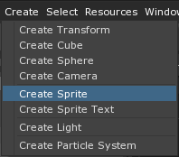
This is what the Level should look like:
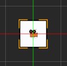
Nothing happens.
In the Object Window
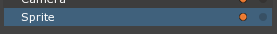
In the Properties Window
Set Name to: Player
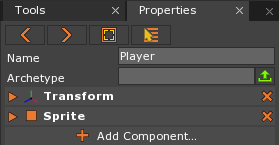
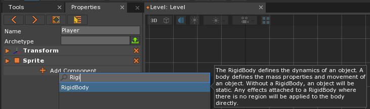
Notice the component description pop up when Rigidbody is highlighted in the auto-complete drop down menu.
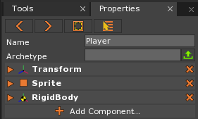
The Player object is falling because its RigidBody
component is affected by the default gravity in the
level.
Components
Components are bits of functionality that can be added to a game object. You can see
the three components on our Player in the Properties window: Transform, Sprite, and RigidBody.
Transformgives our game object a position, rotation, and scale.Sprite, which requires aTransform, allows us to visualize our game object.RigidBodyallows ourTransform‘s Translation (position) and Rotation to be altered by the Physics engine.
While these come with Zero, others we’ll create ourself by coding in Zilch.
By using components to create our game objects we can easily reuse our code to make new and different items.
This set-up can aid you in rapid prototyping when making your own games.
Let’s imagine we are making Bats, Wolves, and Birds. You could create 3 components:
- BatLogic
- WolfLogic
- BirdLogic

While making them you find they have some things in common. Rather than copying
and pasting (which becomes messy fast), we can use the
component-based engine to our advantage and rearrange our
logic. By making smaller components of functionality, we
can factor out the code into common components, making
it easier to share between them. For instance:
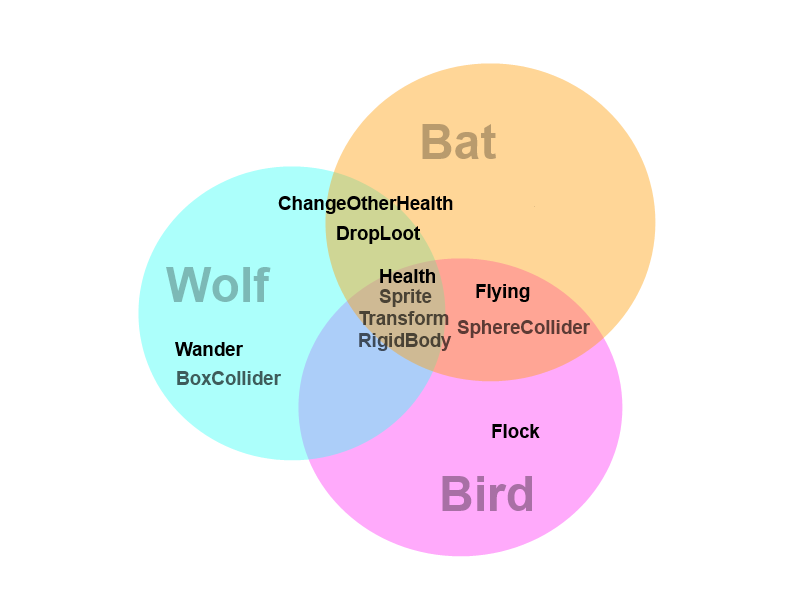
The components in gray are built-in to the Zero Engine
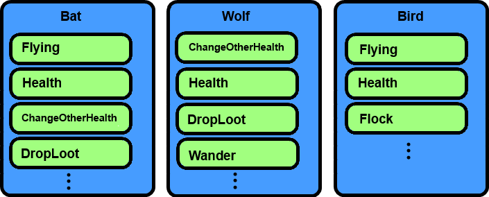
Noticing shared functionality allows us to restructure our code
By having these things separated you can more easily prototype and create new game objects.
For example, say it is later decided to create a flying healthpack. By utilizing the components already made, Flying and ChangeOtherHealth, most of the work is done.
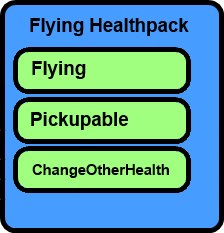
Something we can’t make with BatLogic, WolfLogic or BirdLogic components
Components are meant to be generic (when plausible), in
order to allow for reuse. In many ways, components can be
made more generic by adding Properties to them.
In our example, we could make our DropLoot component more generic by having a Property represent which loot is dropped. With this new property our component could allow our Bat to drop health, while the Wolf drops a power-up, etc.
Let’s explore a Property on the RigidBody component.
- Stop the Game
- Select the Player object
- In the Properties Window
- Under
RigidBody- Set Velocity to: [5, 0, 0]
- Under
This is the initial velocity that the object will have when the level starts.
Zero Engine has a lot of built-in components; next we’ll explore the Physics effects.
Physics Effects
A PhysicsEffect is a component that applies some sort of a force to an object. A PhysicsEffect can be attached in a variety of ways. This effect will then perform its action every frame according to the rules of the object it is attached to.
In the Objects Window
The LevelSettings Object
The LevelSettings object is a special object that influences the behavior of the
objects in a level. It has GravityEffect and DragEffect
components by default. The DragEffect and the
GravityEffect both fall under the PhysicsEffect
category.
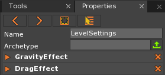
DragEffect
A drag effect can apply drag to an object to slow it down based upon its mass and inertia.
In the Properties Window
Under
DragEffect
{kind=link}
Notice how the Player object falls faster now. This is because the drag is no longer slowing down objects (similar to how air-resistance would affect objects).
- Stop the Game
- Select the LevelSettings object
- In the Properties Window
- Under
DragEffect- Set Drag to: 10
- Under
- Run the Game
Notice how the Player object falls slower now as a result of the increase in drag. Let’s set it back to what its original value was.
- Select the LevelSettings object
- In the Properties Window
- Under
DragEffect- Set Drag to: 0.7
- Under
- Save the project
GravityEffect
In real-world physics, we calculate a force with the equation: Force = Mass * Acceleration. A gravity effect will apply a mass-less force to an object. This means that the object’s mass is ignored (treated as 1.0 in the equation).
In the Properties Window
Under
GravityEffectSet Direction to: [0, 0, 0]
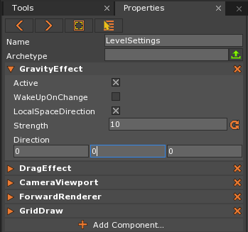
Notice that the Player object does not fall but the initial velocity set on the RigidBody component is still applied.
- Select the LevelSettings object
- In the Properties Window
- Under
GravityEffect- Set Direction to: [0, -1, 0]
- Set Strength to: 30
- Under
The Strength property is the magnitude of the gravitation force.
RigidBodies and Colliders
A RigidBody by itself is a movable point cloud that cannot collide
with anything. Dealing with the physics of an object, RigidBody
defines the linear and angular velocity of an object as well as its force and
torque (rotation force). It also works in conjunction with the associated
Collider of the object to determine material density and the volume
when doing mass-based calculation such as the inertia of the object. Basically,
the RigidBody component deals with movement
of the object.
In the Tools Window
Select the TranslateTool from the drop down selection
Set Snapping to: True
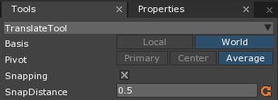
Hold the
Ctrlkey on the keyboard and then drag the Player object downward along the y-axis until its Translation is [0, -5, 0]
Holding the Ctrl key and then dragging an object with the TranslateTool will create a copy of the selected object.
- Select the newly created object (copied from the Player object)
- In the Properties Window
Static objects cannot be moved by collisions, forces or velocity changes.
Here is how the level should look:
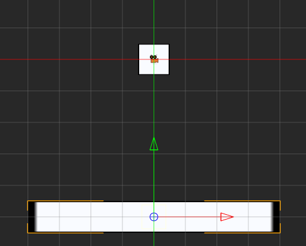
The Player object falls through the Ground object.
Collision Between Objects
In order to make collisions work, we need to add the Collider. The
RigidBody component alone cannot determine
the edges of the shape, so the movement works as if all your objects are ghosts.
Once you add a collider, it can determine when collisions
happen and have things push back. Let’s see it in action.
In the Properties Window
In the Properties Window
{kind=link}
{kind=link}
The Player object should fall and land on the Ground object as shown:
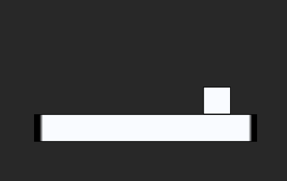
Warning
Physics will not check for collisions between two Static objects.
Static Objects include:
- Objects that have a
Collider, but do not possess aRigidBody. - Objects with a
RigidBodythat has its DynamicState set to Static.
Moving Colliders that don’t have
RigidBodies during run-time will cause performance
to drop drastically. Therefore, avoid moving Colliders that don’t have
RigidBodies; if you must, use a RigidBody
with its DynamicState set to Static. By using a Rigidbody marked
Static, you greatly increase performance and retain the option to change it
to Dynamic or Kinematic, should you later need collision with other Static
objects.
IgnoreSpaceEffects
Every once in a while there is an object you want to be an exception to the rule, e.g. implementing anti-gravity boots. A quick way to make an exception to the applied physics effects is to add the IgnoreSpaceEffects component. Let’s try it out.
- Select the Player object
- In the
LevelWindow- Press
2to select the TranslateTool - Hold the
Ctrlkey on the keyboard and then drag the Player object upward along the y-axis until its Translation is [0, 1.5, 0]
- Press
- Select the newly created object (copied from the Player object)
- In the Properties Window
- Set Name to: Player2
- Add the IgnoreSpaceEffects component
- Under
IgnoreSpaceEffects- Set IgnoreDrag to: True
- Set IgnoreGravity to: True
{kind=link}
{kind=link}
Player2 should be unaffected by the LevelSettings’ effects. Now you have the basic concept behind component-based design, learned to create a Sprite with a Rigidbody and Collider, found out where default physics effects came from and how to ignore, them while looking into the LevelSettings object.